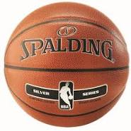
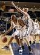

|  |  |
 |
|
|  |  |
Kos�rlabda
A kos�rlabda egy olyan labdaj�t�k, melyet k�t �tf�s csapat j�tszik. Mindk�t csapatnak van egy-egy a p�ly�n egym�ssal szemben 3,05 m�ter magasan elhelyezett lyukas kosara. A csapatok c�lja a szab�lyszer� j�t�k sor�n az, hogy a labd�t az ellenf�l kosar�ba dobj�k, illetve hogy megakad�lyozz�k a m�sik csapatot ugyanebben. Wikip�dia
- Legmagasabb ir�ny�t� test�let: FIBA
- Csapat l�tsz�ma: 5 f�
- Els� j�t�k: 1891. Springfield, Massachusetts, (USA)
- Olimpiai: 1936 �ta
- �rint�s: Van
- Poz�ci�k: center, Ir�ny�t�, Kiscsat�r, Dob�h�tv�d, Er�csat�r